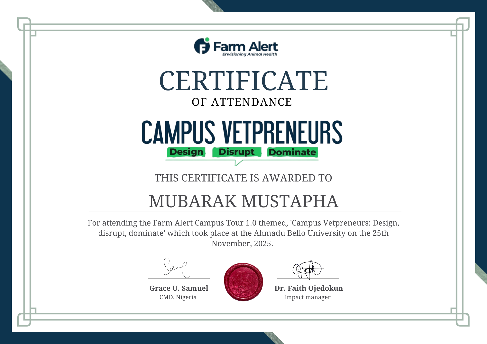

Issuer
Certificate Title
Date
Detailed certificate description and criteria met to acquire this credential.
Verify CredentialComputer Science Education graduate from Ahmadu Bello University (2025) bridging the gap between practical IT/Cybersecurity engineering and global Climate Action/SDG leadership. Certified by the Oxford Climate Society, Cambridge CEENRG, IBM, and Cisco.

IT Specialist & SDG Mobilizer
A powerful dual specialty driving technical defense systems and environmental sustainability campaigns.
Skilled in designing secure, resilient networks, performing vulnerability audits, and building interfaces on top of blockchain ledgers.
Community leader driving environmental cleanup, waste audits, and regional campaigns aligned with the United Nations SDGs.
Chronological footprint of leadership initiatives, professional training, and educational background.
Managed a monthly volunteer base of over 300 students. Spearheaded region-wide campus waste cleanups, run campaigns, and environmental advocacy stories.
Underwent a 6-week security operations training. Practiced network scanning, password security protocol analysis, and threat containment setups.
Leading on-the-ground and digital awareness campaigns for clean air technology. Promoting micro-algae biological systems for pollution absorption.
Managed back-end operations and panel logistics for international youth summits focused on circular economies.
Gained deep knowledge in pedagogy, instructional technologies, computer network architectures, database querying, and software designs.
Studied foundational computer programming, secondary school teaching methodology, and educational management systems.
Filterable repository of verified certifications in Cybersecurity, Web Development, Climate Action, and Leadership.
Tailored cover letter demonstrating how Mubarak's unique dual profile perfectly fits the ETCIO program goals.
Dear Hiring Committee,
I am writing to express my enthusiastic interest in the Programs & Community Engagement Officer position at Educate The Citizens International Organization (ETCIO). With a Bachelor of Science in Education in Computer Science Education from Ahmadu Bello University, Zaria, combined with extensive, hands-on experience coordinating youth summits and leading large-scale community mobilization campaigns, I am eager to contribute to your mission of raising confident, values-based, and socially aware citizens.
My educational background has equipped me with a strong understanding of instructional design, youth psychology, and curriculum structuring. I have successfully applied these educational principles in practical contexts, such as designing and delivering cyber hygiene workshops for students and organizing educational panels for youth leaders. I strongly believe that equipping young people with character, values, and modern social skills is key to community development, and my background enables me to translate ETCIO's educational goals into highly engaging, structured, and impactful programs.
As a natural community builder, I have a proven track record of mobilizing youth and managing volunteer networks. During my tenure as the Community Leader and Environmental Organizer for the Plogging Nigeria ABU Community, I managed a team of over 300 volunteers monthly and pioneered the ABU Campus Cleanup 2.0, leading 250+ participants. Additionally, as the Youth Day of Service Coordinator for LEAP Africa, I successfully recruited and managed over 500 volunteers for community outreach projects. These roles required me to establish strong relationships with schools, local authorities, and partner organizations—experience that directly aligns with ETCIO's requirement to engage with communities, volunteers, and partners.
Furthermore, I possess robust experience in program operations, logistics, and impact tracking. As the Logistics Officer for the Planeteer Alliance FIRE Summit (Captain Planet Foundation) and the host of the 2025 Wind Summit, I managed venue operations, resource distribution, and volunteer workflows for international panels. These roles honed my capacity to coordinate complex program logistics, maintain meticulous documentation, and generate progress reports. My technical proficiency in data analytics (using Excel and SQL) and remote collaboration tools (such as Google Forms, Canva, Zoom, and the Microsoft Office Suite) ensures that I can track program metrics, analyze engagement impact, and collaborate seamlessly in ETCIO's remote-first work environment.
I am highly proactive, organized, and thrive in remote, fast-paced environments where taking initiative is valued. The opportunity to grow into a leadership role within ETCIO while making a tangible, positive impact on young lives is incredibly inspiring to me.
Thank you for your time and consideration. I welcome the opportunity to discuss how my educational training, logistics experience, and community outreach success can support the growth and execution of ETCIO’s programs.
Detailed certificate description and criteria met to acquire this credential.
Verify Credential